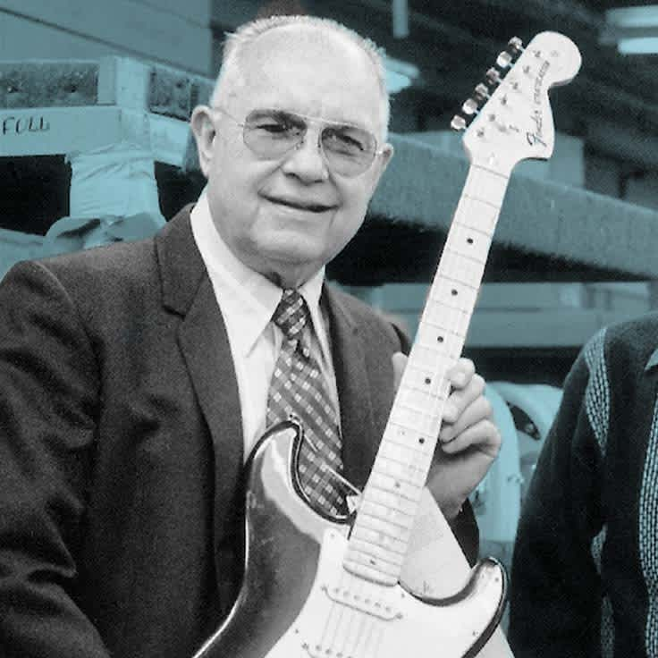
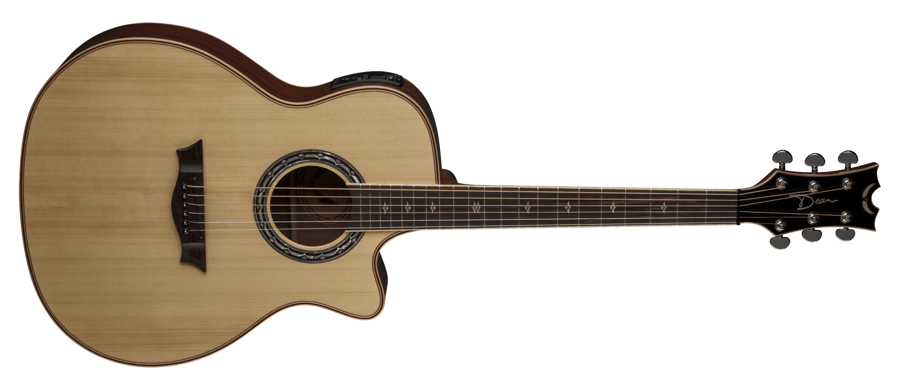
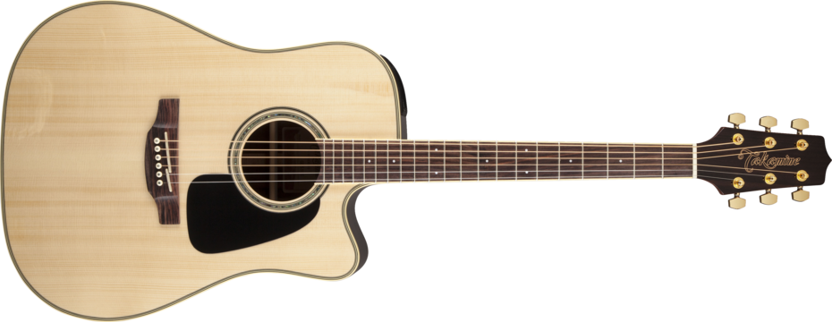
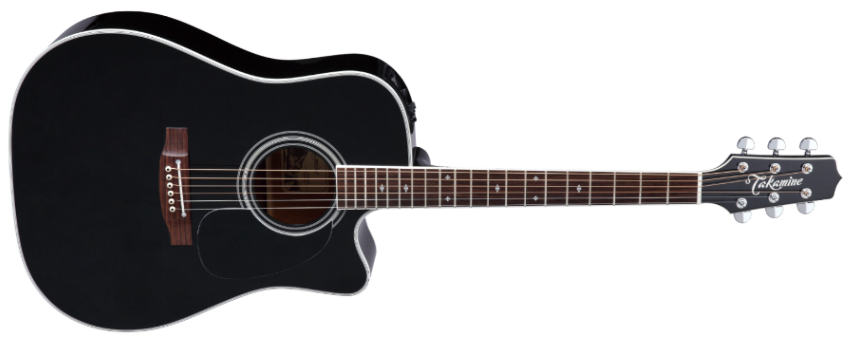

HISTORIA DE LA GUITARRA ELECTRICA
FENDER STRATOCASTER
La historia de la guitarra Fender Stratocaster es una de las más emblemáticas en la música popular y
ha dejado una huella profunda en casi todos los géneros musicales, desde el rock hasta el blues,
el jazz y el pop.
Orígenes de la Fender Stratocaster

La Fender Stratocaster fue creada por el luthier y fundador de Fender, Leo Fender, quien comenzó
a experimentar con guitarras eléctricas a finales de los años 40. Fender ya había lanzado la Telecaster en 1950,
la primera guitarra eléctrica sólida de producción masiva, que fue un gran éxito. Sin embargo,
Leo quería crear un modelo más versátil y cómodo para los músicos, con un sonido más expresivo y la posibilidad de tocar una mayor variedad de estilos musicales.
El diseño original (1954)
El modelo que más tarde sería conocido como la Stratocaster nació en 1954.
En comparación con la Telecaster, la Stratocaster tenía un cuerpo más contorneado y curvado,
lo que la hacía
más cómoda de tocar, especialmente en la parte del brazo y el estómago del guitarrista.
Este diseño de cuerpo contorneado, inspirado por el deseo de ofrecer más comodidad a los músicos,
fue una de las características innovadoras que la diferenció de las guitarras anteriores.
La Stratocaster también tenía un mástil de arce, con un perfil más delgado que el de su predecesora,
lo que facilitaba el acceso a las notas altas y mejoraba la velocidad de ejecución.
Además, su diseño presentaba una caja de trémolo (el famoso sistema "tremolo" o "vibrato")
que permitía alterar la afinación de las cuerdas mediante una palanca,
lo que se convirtió en una de las características definitorias del instrumento.
La Stratocaster debutó con una configuración de tres pastillas de bobina simple (single-coil),
lo que proporcionaba un sonido brillante y nítido que difería de los tonos más graves y
cálidos de las guitarras con pastillas humbucker. Esta versatilidad de sonido, sumada al diseño ergonómico,
hizo que la Stratocaster se convirtiera rápidamente en una de las guitarras más populares de la época.
La popularización de la Stratocaster
A partir de mediados de la década de 1950, la Fender Stratocaster fue ganando
popularidad en la escena musical. Artistas como Buddy Holly,
Jimi Hendrix y Eric Clapton comenzaron a adoptar la Stratocaster como su instrumento principal,
lo que elevó su estatus a un icono dentro de la cultura musical.
Jimi Hendrix: Uno de los más grandes y revolucionarios guitarristas de todos los tiempos,
Hendrix se convirtió en un embajador natural de la Stratocaster,
gracias a su estilo único y su habilidad para explorar los límites del instrumento.
Su famosa interpretación de "The Star-Spangled Banner" en Woodstock,
tocada con una Stratocaster, se convirtió en uno de los momentos más emblemáticos de la música de los años 60.
Eric Clapton: Clapton, apodado "Slowhand", también adoptó la Stratocaster,
especialmente durante su época con Cream y en su carrera en solitario.
Su famoso modelo "Blackie" (una Stratocaster negra modificada) es un símbolo de su estilo de blues y rock.
Innovaciones en los años 60 y 70
Durante la década de los 60, la Fender Stratocaster continuó evolucionando.
El modelo adquirió una mayor popularidad entre músicos de diferentes géneros, y Fender introdujo
algunas variaciones, como cambios en los pickups (pastillas) y el sistema de trémolo,
buscando mejorar el tono y la estabilidad.
En 1965, Fender fue adquirida por la empresa CBS,
lo que marcó el comienzo de una serie de cambios en la producción y el diseño de la Stratocaster.
Durante este período, la calidad de las guitarras sufrió ciertos altibajos debido a los cambios en los métodos de fabricación, pero la Stratocaster siguió siendo muy demandada por músicos profesionales.
El resurgimiento en los 80s y la era moderna
A finales de los años 70 y principios de los 80,
Fender comenzó a recuperar su enfoque en la calidad de construcción,
y la Stratocaster volvió a ser un instrumento popular entre los guitarristas más jóvenes.
Artistas como David Gilmour (Pink Floyd) y John Frusciante (Red Hot Chili Peppers) abrazaron la Stratocaster en sus producciones y actuaciones.
En los 80s, Fender también comenzó a diversificar aún más la línea de Stratocasters,
con modelos personalizados y ediciones limitadas, así como con la introducción de pastillas humbucker y otras variaciones para adaptarse a los nuevos géneros musicales que estaban emergiendo, como el rock alternativo y el heavy metal.
Modelos icónicos y ediciones especiales
A lo largo de los años, Fender ha lanzado una gran cantidad de modelos y ediciones especiales de la Stratocaster.
Entre los más conocidos se encuentran las Stratocaster American Standard,
las Fender Custom Shop, y las Signature Series, que son modelos creados en colaboración con artistas como Eric Clapton, Jeff Beck, John Mayer, Yngwie Malmsteen, y Buddy Guy.
Fender también ha experimentado con distintas gamas de precios,
desde las versiones más asequibles de las Stratocaster México hasta las guitarras de gama alta
fabricadas en los Estados Unidos, que siguen siendo algunas de las mejores guitarras eléctricas disponibles
en el mercado.
La Fender Stratocaster hoy en día
La Fender Stratocaster sigue siendo una de las guitarras más populares y versátiles del mundo.
Con más de 60 años de historia, sigue siendo un pilar en el mundo de la música. Su sonido brillante y versátil,
su comodidad y su estética elegante la han convertido en una herramienta
indispensable para músicos de todos los géneros. Ya sea en el escenario, en el estudio o como pieza de colección,
la Stratocaster sigue siendo un símbolo de innovación y de expresión musical.
La Fender Stratocaster en Bolivia
Con la demanda actual que tiene la musica aqui en bolivia por grupos animando fiestas es super indispensable
tener una guitrra de estas que sea versatiles lo que buscan muchos musicos en este ambito no solo
sirve para cumbia si nos que tambien en otros generos como la chicha antigua la cual era de puro punteo de guitarra
fender que le daba ese sabor agradecemos al creador "LEO FENDER" por darnos tan linda guitarra.
Guitarra Acustica-Criolla

- 
- 
- 
La guitarra, tal como la conocemos hoy, tiene una larga historia de evolución, pero su origen se remonta a varios siglos atrás. El instrumento en sus formas más tempranas se desarrolló a partir
de otros instrumentos de cuerda antiguos, como la lira y el laúd .
Antiguo
Las primeras formas de instrumentos similares
a la guitarra aparecieron en las civilizaciones antiguas de Egipto, Grecia y Roma.
Por ejemplo, la kithara en Grecia y la cithara romana eran instrumentos de cuerda que se
tocaban con los dedos o una pua.
Medieval
En la Edad Media, surgieron versiones del laúd,
un instrumento que era precursor directo de la guitarra. El laúd medieval ya tenía una caja de resonancia y cuerdas afinadas de forma similar a las guitarras modernas.
Durante el Renacimiento, el término "guitarra"
comenzó a utilizarse para describir un instrumento con una forma más reconocible. La guitarra de este período tenía entre 4 y 6 órdenes (pares de cuerdas). A finales del siglo XVII,
los luthiers empezaron a desarrollar un diseño de guitarra con 6 cuerdas simples.
Guitarra moderna
La guitarra moderna,
con la forma y las características que conocemos hoy,
comenzó a tomar su forma definitiva en el siglo XIX. En España,
el luthier Antonio de Torres, considerado el "padre" de la guitarra clásica moderna,
hizo importantes mejoras en el diseño del cuerpo, la tapa armónica y la construcción del mástil,
lo que permitió una mayor resonancia y volumen.
El uso de la guitarra acustica en el folklore de Bolivia
La guitarra acústica es un instrumento fundamental en el folklore de Bolivia,
donde acompaña diversos géneros y estilos musicales tradicionales, adaptándose a las características
y necesidades de cada región. Aunque algunos de los instrumentos
autóctonos de Bolivia incluyen charangos, quenas y zampoñas, la guitarra se ha integrado al
folklore boliviano debido a su versatilidad y capacidad para enriquecer la sonoridad de estos estilos.
1. Coplas y tonadas de la región andina
En las áreas andinas de Bolivia, como La Paz, Oruro y Potosí,
la guitarra acústica se usa para acompañar coplas y tonadas, estilos vocales que suelen
interpretarse en fiestas y celebraciones tradicionales. Las coplas, que a menudo expresan temas de amor,
nostalgia y conexión con la tierra, se encuentran en la guitarra un soporte melódico y armónico que
En estos géneros, la guitarra suele interpretarse en un estilo rítmico y percusivo,
que se adapta bien al carácter repetitivo y poético de las
Guitarra Electricas pt2
GIBSON LES PAUL
La historia de la guitarra Gibson Les Paul es fascinante y está llena de innovación,
colaboraciones importantes y mucha música. La Les Paul, una de las guitarras eléctricas más icónicas del mundo,
es conocida por su sonido cálido y profundo, además de su diseño elegante.
Fue desarrollada en los años 50 y desde entonces ha tenido un impacto enorme en el rock, el blues y otros géneros
musicales.
Orígenes y colaboración con Les Paul
La Gibson Les Paul fue lanzada en 1952, pero sus raíces se encuentran en una colaboración
entre Gibson y el guitarrista e inventor Les Paul (cuyo nombre real era Lester William Polsfuss).
Les Paul, ya una leyenda en el jazz y la música popular,
era un innovador entusiasta que experimentó con la amplificación y el sonido de las guitarras.
Desde los años 40, Les Paul había estado trabajando en una guitarra de cuerpo
sólido para mejorar la calidad del sonido y reducir el ruido de retroalimentación que afectaba
a las guitarras huecas cuando se amplificaban a volúmenes altos. Construyó una de las primeras guitarras
de cuerpo sólido, a la que llamaba "The Log" (El Tronco), que consistía en una pieza de madera de 4x4 pulgadas
con un mástil y pastillas acopladas. Aunque la idea fue rechazada inicialmente por Gibson,
años después la compañía vio el éxito de guitarras de cuerpo sólido como la Fender Telecaster,
y finalmente decidieron unirse a Les Paul para crear su propio modelo.
El lanzamiento en 1952 y las primeras versiones
La primera Gibson Les Paul fue lanzada oficialmente en 1952, y su diseño fue bastante revolucionario.
Este modelo original tenía un cuerpo sólido de caoba con una tapa de arce,
un puente estilo trapezoide y una elegante terminación dorada que le valió el apodo de "Goldtop".
El diseño no solo era llamativo,
sino que también ofrecía un tono y un sustain que rápidamente atrajeron a muchos guitarristas.
Evolución y popularidad en los 50 y 60
En 1954, Gibson introdujo el modelo Les Paul Custom, también llamado "Black Beauty", que tenía una
estética más lujosa con detalles en negro y oro, además de pastillas P-90 y un nuevo puente Tune-O-Matic
que mejoraba la afinación y el sustain. En 1957, Gibson introdujo sus famosas pastillas "humbuckers" PAF,
creadas por el ingeniero Seth Lover. Estas pastillas eliminaron el zumbido eléctrico característico de las
pastillas de bobina simple y añadieron un tono más cálido y rico,
ideal para el blues y el rock. Las Les Paul con humbuckers se convirtieron rápidamente en modelos muy codiciados.
Sin embargo, en 1961, debido al costo de producción y a una caída en la popularidad,
Gibson rediseñó la Les Paul y le dio un cuerpo más ligero y estilizado, que luego se convirtió en la SG.
Aunque Les Paul no aprobó estos cambios, esta nueva guitarra fue lanzada bajo su nombre hasta que finalmente
se renombró como Gibson SG en 1963.
El resurgimiento en los años 60 y 70
Curiosamente, a pesar de que Gibson había dejado de fabricar el modelo original,
guitarristas de rock de la época como Eric Clapton, Jimmy Page, y Jeff Beck comenzaron a redescubrir
las Les Paul de los años 50. Su tono grueso y la capacidad para manejar
la distorsión hicieron de las Les Paul guitarras ideales para el rock y el blues,
especialmente en la era de los amplificadores más potentes y efectos de distorsión.
La demanda aumentó tanto que Gibson decidió relanzar la Les Paul en 1968,
y esta vez el modelo vino con mejoras modernas pero manteniendo muchas de las características clásicas.
A partir de ese momento, la Les Paul se estableció como un estándar en la industria musical.
El legado de la Les Paul en la música moderna
Desde su relanzamiento, la Gibson Les Paul ha sido una de las guitarras más utilizadas
en la historia del rock, el metal, el blues y muchos otros géneros. Músicos icónicos
como Slash de Guns N' Roses, Zakk Wylde, y Kirk Hammett de Metallica han hecho de la Les Paul su guitarra preferida.
Su tono distintivo y su capacidad para abarcar
desde sonidos limpios y cálidos hasta distorsiones potentes la hacen extremadamente versátil.
Modelos y ediciones especiales
A lo largo de los años, Gibson ha lanzado múltiples versiones y reediciones de la Les Paul,
desde modelos Standard hasta ediciones Custom Shop y Signature, que celebran a músicos como Slash,
Joe Perry, y Billy Gibbons. La marca también ha experimentado con diferentes materiales y acabados,
como la Les Paul Studio (más sencilla y asequible) y la Les Paul Junior, un modelo más económico.
Innovaciones recientes
Gibson sigue innovando con la Les Paul.
Modelos modernos vienen con características como afinadores automáticos y pastillas activas,
adaptándose a las necesidades de los músicos contemporáneos. A pesar de estos cambios,
el diseño básico de la Les Paul y su esencia han cambiado poco desde sus orígenes.
Un ícono inmortal
La Gibson Les Paul no es solo una guitarra; es un símbolo en la cultura musical.
Su diseño, sonido y legado la convierten en una de las guitarras más deseadas y
veneradas en la historia de la música. Su influencia es tal que muchos músicos y
coleccionistas consideran a la Les Paul como una obra de arte,
manteniéndola viva y relevante a lo largo de las décadas.
La Gibson Les Paul sigue siendo un emblema del sonido rockero,
una guitarra que combina historia, diseño y un sonido característico
que ha moldeado a generaciones de músicos.